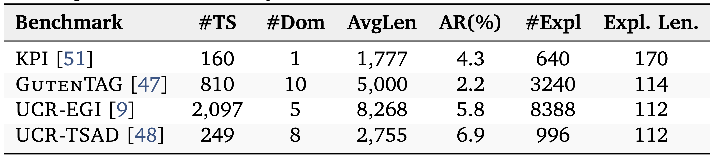
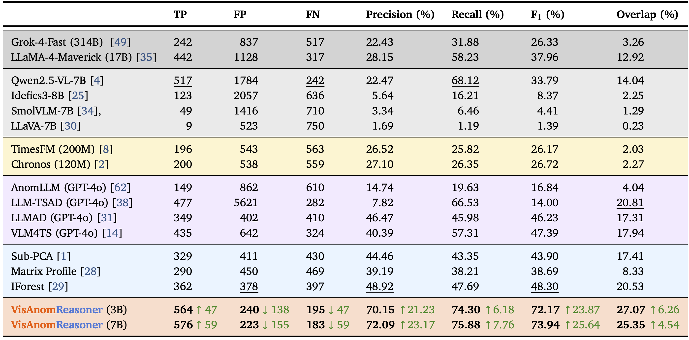
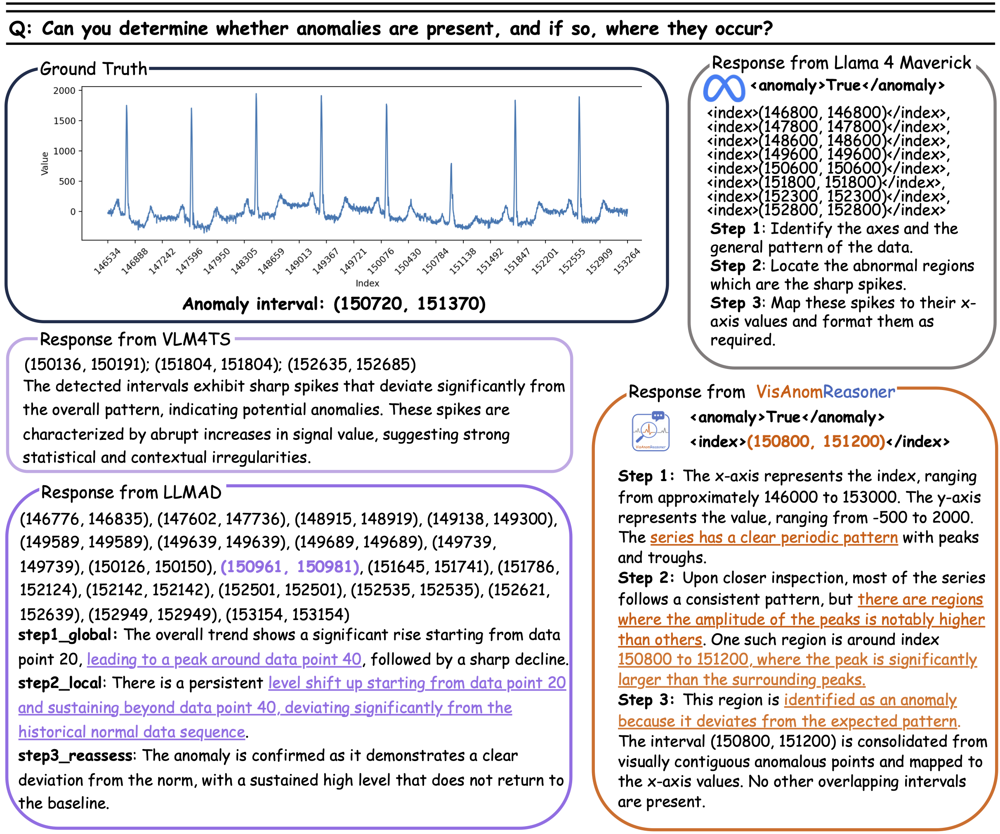
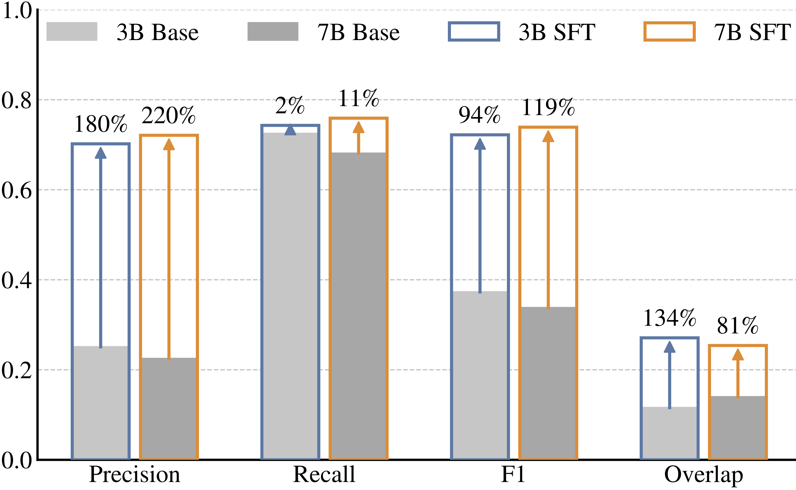
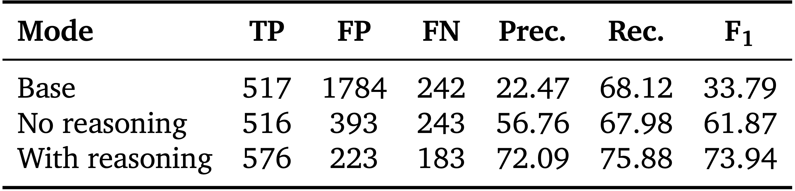

Tiny but Trusted: Efficient Vision-Language Reasoning for Time-Series Anomaly Detection
Abstract
Recent advances in Vision-Language Models (VLMs) have achieved impressive performance across many tasks, yet prior studies report unsatisfactory performance when applying large language or multimodal models to finding abnormal patterns in sequential data. Public anomaly detection benchmarks typically provide interval annotations but not natural-language rationales, making it difficult to fine-tune VLMs to produce grounded, interpretable decisions. To address this gap, we construct VisAnomBench, a curated benchmark built from public time-series datasets and augmented with high-quality anomaly explanations selected from multiple large VLMs using fine-grained, task-specific rewards. Through fine-tuning on this benchmark, we develop VisAnomReasoner, a parameter-efficient VLM for time-series anomaly detection. Experimental results on VisAnomBench show that VisAnomReasoner achieves more accurate anomaly localization and consistently outperforms all baselines, with improvements of at least 21.23 and 23.87 percentage points in precision and F1, respectively. Additional experiments on the TSB-AD-U benchmark demonstrate strong cross-benchmark generalization, with VisAnomReasoner improving precision and F1 by 9.57 and 13.39 percentage points, respectively.
VisAnomBench
VisAnomBench is an explanation-augmented benchmark for vision-language time-series anomaly reasoning, constructed from four public anomaly detection datasets spanning diverse domains and anomaly types. For each time-series plot, the benchmark provides (1) anomaly interval annotations and (2) temporally grounded step-by-step explanations aligned with the labeled anomalies. To build the dataset, we segment and render time series as plots, elicit structured reasoning traces from multiple large VLMs, and select the highest-quality explanation using a reward that combines anomaly localization accuracy, visual groundedness, axis awareness, and clarity. The final benchmark contains 2,576 training and 740 held-out test time series for supervised fine-tuning and evaluation of reasoning-based anomaly detection models.

VisAnomReasoner
VisAnomReasoner is a parameter-efficient vision-language model for reasoning-based time-series anomaly detection from plots. Given a plotted time series and optional context, the model jointly predicts anomaly intervals and generates grounded step-by-step explanations aligned with observable visual patterns such as spikes, level shifts, and periodic deviations. Unlike prior prompt-based approaches, VisAnomReasoner is supervised using explanation-augmented training data from VisAnomBench, where each example contains both target anomaly intervals and preferred reasoning traces. The model is implemented by supervised fine-tuning of Qwen2.5-VL-3B and Qwen2.5-VL-7B using structured outputs with dedicated tags for anomaly decisions, interval localization, and reasoning generation.
Results
Anomaly Detection Performance on VisAnomBench. Best performance is bold, and second best is underlined. Green arrows (↑) indicate absolute improvement relative to the second best.

Despite its small scale, VisAnomReasoner consistently outperforms general-purpose VLMs, specialized LLM/VLM anomaly detectors, time-series foundation models, and classical detectors, improving precision and F1 by at least 21.23 and 23.87 percentage points on VisAnomBench.
Qualitative Analysis
VisAnomReasoner precisely localizes the anomalous interval with visually grounded, structured reasoning; whereas other methods exhibit coarser localization or produce numerous spurious intervals with less grounded explanations.

Ablation Studies
Supervised fine-tuning substantially improves anomaly localization and temporal boundary accuracy over the base Qwen2.5-VL models. The largest gains occur in precision, indicating a major reduction in false positives, while overlap improvements reflect more accurate interval localization.

Ablation studies compare the pretrained base model, interval-only fine-tuning, and reasoning-augmented fine-tuning. While interval-only supervision substantially reduces false positives, adding reasoning traces further improves both precision and recall, showing that explanation-augmented supervision contributes directly to improved anomaly localization.

BibTeX
@article{zhou2026tiny,
title={Tiny but Trusted: Efficient Vision-Language Reasoning for Time-Series Anomaly Detection},
author={Zhou, Xiaona and Wahed, Muntasir and Yu, Tianjiao and Brif, Constantin and Lourentzou, Ismini},
journal={arXiv preprint arXiv:2605.30344},
year={2026}
}